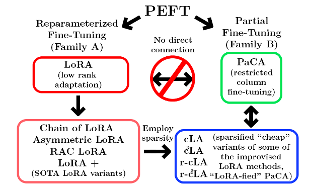
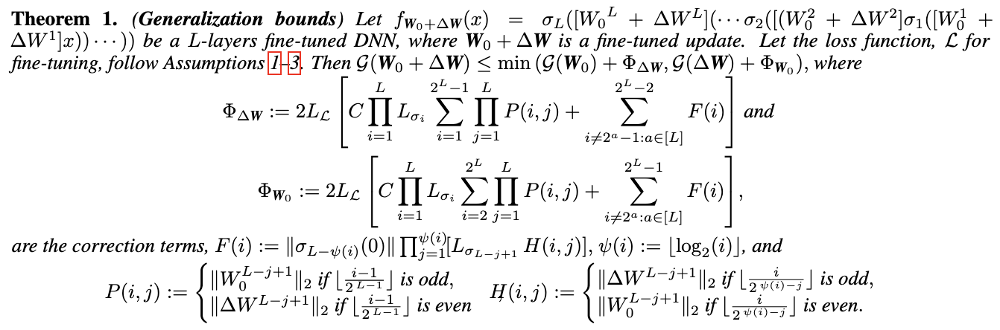
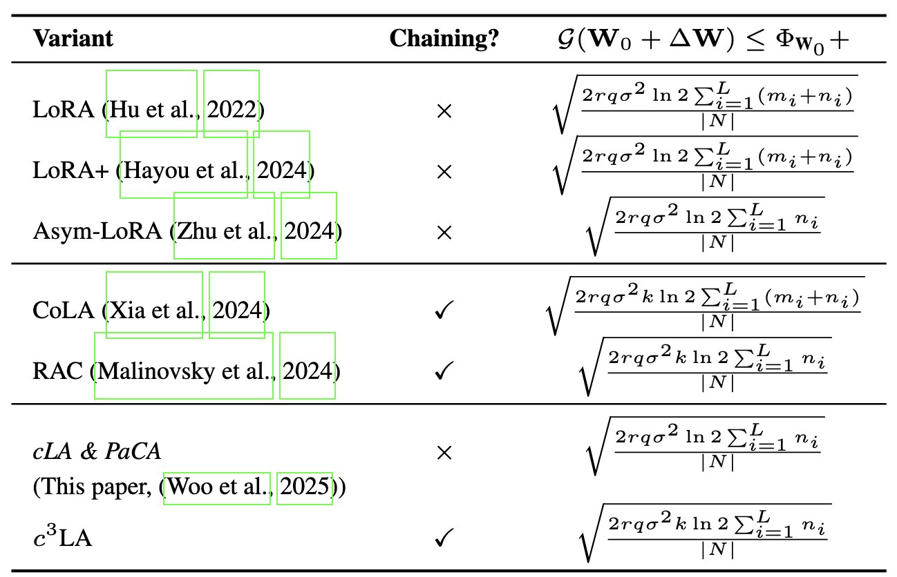
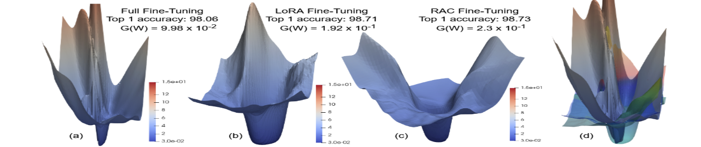

Sparse LoRA Variants
We introduce cLA, random-cLA, c3LA, and random-c3LA as structured, low-cost LoRA-style adaptation methods.
1 School of Data, Mathematical and Statistical Sciences, University of Central Florida
2 College of Computing, Mohammed VI Polytechnic University
3 Department of Computer Science, University of Central Florida
Sparse, structured LoRA variants for cheaper and competitive parameter-efficient fine-tuning.
Low-rank adaptation methods provide memory- and compute-efficient alternatives to full fine-tuning, but it remains unclear how structural restrictions on low-rank updates affect adaptation and generalization. We study sparsity-induced LoRA variants that restrict learning to structured column subspaces while remaining competitive with parameter-matched baselines.
We introduce Cheap LoRA (cLA), its randomized variant, circulant chained Cheap LoRA (c3LA), and randomized chained variants. The paper combines information-theoretic generalization bounds with an empirical study across language, vision, code, and reasoning tasks.
We introduce cLA, random-cLA, c3LA, and random-c3LA as structured, low-cost LoRA-style adaptation methods.
We frame cLA as a structured asymmetric LoRA method that connects reparameterized fine-tuning to partial column-space adaptation.
We derive information-theoretic generalization bounds comparing standard, asymmetric, chained, and sparsity-induced PEFT methods.
We evaluate 11 fine-tuning methods across 10 pretrained models and 14 datasets, spanning NLP, vision, code generation, and logical reasoning.
Two PEFT methods can have similar trainable parameter counts but behave differently because their updates occupy different subspaces. This paper asks whether structured sparsity inside LoRA-style updates can preserve useful adaptation while reducing training cost.
The central question is not only whether a method has fewer trainable parameters, but whether the geometry of the update is enough for strong downstream adaptation. cLA tests this by fixing one low-rank factor to select a structured column subspace and training only the other factor.
Fix A = [Ir | 0] and train only B. This restricts adaptation to a deterministic column subspace.
Randomize the fixed column selector while still training only the low-rank factor B.
Chain cLA modules and shift the identity block by r columns across chains, expanding coverage over the pretrained layer.
Combine randomized fixed selectors with the chained cLA construction.

Sparsity-induced LoRA variants connect reparameterized fine-tuning and partial fine-tuning.
The main theoretical result upper bounds the generalization error of the full fine-tuned model W0 + ΔW by combining the pretrained backbone and the fine-tuned update.


The sparsity-induced variants inherit generalization-order behavior comparable to their closest asymmetric or chained LoRA counterparts.
11 Fine-tuning methods, 10 Pretrained models, 14 Datasets, and 4 Task families.
The evaluation covers natural language processing, image classification, code generation, and logical reasoning. Models include DeBERTa, RoBERTa, GPT-2, DeepseekCoder, TinyLlama, Llama 3, and Vision Transformers.
No single method dominates across all tasks. Sparse variants are often competitive with LoRA and parameter-matched baselines, and in some settings they improve over standard LoRA.
| Model | Dataset | LoRA | cLA | c3LA | Observation |
|---|---|---|---|---|---|
| ViT-Base | OfficeHome | 88.96 | 89.21 | 89.18 | cLA/c3LA match or exceed LoRA |
| ViT-Base | CIFAR-10 | 98.71 | 98.63 | 98.54 | Small drop under sparse restriction |
| Llama3-8B | CLUTRR | 48.70 | 55.53 | 52.04 | cLA improves over LoRA |
| DeBERTa v2 XXL | TREC-50 | 91.47 | 91.73 | 90.87 | cLA remains competitive |
5–10% Training-time reduction, 5–15% Peak GPU memory reduction.
Sparse variants reduce training time and peak memory while preserving competitive downstream performance.
Loss landscapes and intruder dimensions are useful diagnostics, but they do not always align with empirical generalization error. This motivates reporting both model quality and measured generalization gaps when comparing PEFT methods.

In several settings, sharper or smoother loss landscapes do not perfectly predict empirical generalization behavior.
The following pseudocode sketches the sparse adaptation mechanisms used by the proposed variants.
Given pretrained layer W0 ∈ R^{n×m}
Choose rank r and scale α
Set A = [ I_r | 0_{r×(m-r)} ]
Initialize B = 0_{n×r}
For each training step:
Compute loss L using W = W0 + (α/r) · B · A
Update B ← B − η · ∇_B L
Return adapted layer WGiven pretrained layer W0 ∈ R^{n×m}
Choose rank r, chain length k, scale α
For j = 1..k:
Define A_j as a shifted selector
A_1 = [ I_r | 0 | 0 | ... ]
A_2 = [ 0 | I_r | 0 | ... ]
...
Initialize B_j = 0_{n×r}
For j = 1..k:
For each training step:
Compute loss L using
W = W0 + Σ_{t=1..j} (α/r) · B_t · A_t
Update B_j ← B_j − η · ∇_{B_j} L
Return adapted layer WGiven pretrained layer W0 ∈ R^{n×m}
Choose rank r and scale α
Sample a fixed randomized selector A
Initialize B = 0_{n×r}
For each training step:
Compute loss L using W = W0 + (α/r) · B · A
Update B ← B − η · ∇_B L
Return adapted layer WGiven pretrained layer W0 ∈ R^{n×m}
Choose rank r, chain length k, scale α
For j = 1..k:
Sample a fixed randomized selector A_j
Initialize B_j = 0_{n×r}
For j = 1..k:
For each training step:
Compute loss L using
W = W0 + Σ_{t=1..j} (α/r) · B_t · A_t
Update B_j ← B_j − η · ∇_{B_j} L
Return adapted layer W@article{cadenhead2026beyondlora,
title={Beyond LoRA: Is Sparsity-Induced Adaptation Better?},
author={Cadenhead, Elijah and McGee, Cristian and Li, Xin and Bergou, El Houcine and Dutta, Aritra},
year={2026}
}